Did you know updating will resolve
some of the most common support issues?
- Installing a Workstation
- Workstation Connectivity
- Program Updates
Support Center
IT Frequently Asked Questions
If a computer or device is running slowly, not performing as it usually does, or is simply defying all logic, a
simple restart can often return the device to running normally, more smoothly. If a reboot fails to solve the
issue or these issues frequently occur, contact us with the device’s hostname or inventory number, and we will
look into the problem further.
Staff/Public Computers
At the end of the day, should I log off of the computer or shut it down?
Please turn off your computer at the end of the work day, unless Library IT sends out a Libnews email stating
otherwise. Usually we will only ask you to log off if updates need to be installed on staff computers. The
computer will automatically turn on the next morning.
I’m locked out of the computer and cannot log in.
Press the on/off button on the CPU until the computer turns off. After you turn it on, the computer should allow
you to log in as normal.
The scanner is no longer prompting to scan additional pages.
In Adobe Acrobat Pro, click on Create - PDF from Scanner… - Configure Presets. In this window you can check the
box that says, “Prompt for scanning more pages”. Click Save and Close after you’ve checked the box. The program
should then start prompting for additional pages for future scans.
Report Computer Problems
Things to try before logging a work request
-
Be sure the computer, printer, or other device that’s giving you trouble is plugged in. Many times surge
protectors or network cables get unintentionally unplugged or switched off.
- If you are working in an application where you can save your data, try to do so before calling for
help.
- Terminate any sessions that involve communication with another computer–for example, an email client.
- Log off the computer. Shut down all the applications you have running. Click the Start button and
select Log Off. Then logon again. This often clears up problems with individual applications.
- Restart the computer. Shut down all the applications you have running. Click the Start button and select
Shut Down, then Restart the Computer.
Information to include when you log a work request
Supportrmation in the ticket helps us identify potential problems and solutions sooner. Helpful information in
tickets include:
- The Hostname or Inventory Number of the computer, printer, or other device.
- Your name, unit, and office number (when applicable).
- A specific account of the problem, including as much detail as possible.
- The URL or file path that exhibits the problem (if applicable) followed by the error details i.e. “When
I try to open G:\Systems\HelpDesk, I get an Access denied error”.
- Attach screenshots of any error messages you receive.
- A description of any troubleshooting you did before you logged the ticket (i.e. restarted computer,
restarted printer, etc.).
- Add that you left a message with the AITS Answering Service if they were contacted during weekend or
evening hours.
© 2019 Library Media and Instructional Technology | 800-555-6439
| Back to the Top